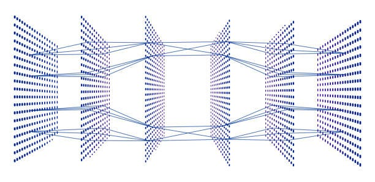

Skin Cancer Detection Using CNN build
- Developing a Skin Cancer Detection model using Convolutional Neural Networks (CNN)
- The data collection phase is underway, with sources including reputable organizations such as the World Health Organization (WHO), as well as datasets from Google, Amazon, and Kaggle
- To optimize the efficiency of our model, I have chosen the ADAM optimizer, a widely used optimization algorithm in deep learning
- This comprehensive approach, leveraging diverse and reliable datasets, along with advanced optimization techniques, aims to enhance the accuracy and effectiveness of the skin cancer detection system
Technologies used: